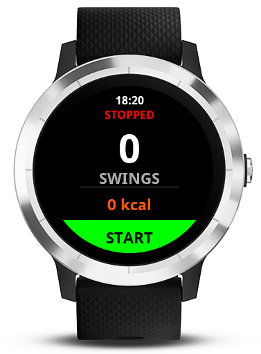

The ultimate app to track your swings at the practice range with your Garmin.
Uses the accelerometer to count every swing without pressing anything.
Saves the session as a Golf activity on Garmin Connect with calorie calculation.
Customizable algorithm to adapt to your swing style.
Every golfer is different. If the app doesn't count correctly, adjust the threshold in settings.
| Threshold Value | Sensitivity | When to use it |
|---|---|---|
| 1500 - 1800 | Very High | For light swings or chip shots. |
| 2000 - 2500 | Normal | Recommended setting for most players. |
| 3000+ | Low | For very powerful swings or if the app counts too many extra movements. |
Golf Range Swings is free and open source. If you find it useful, consider a small donation to support development!
Support via PayPal